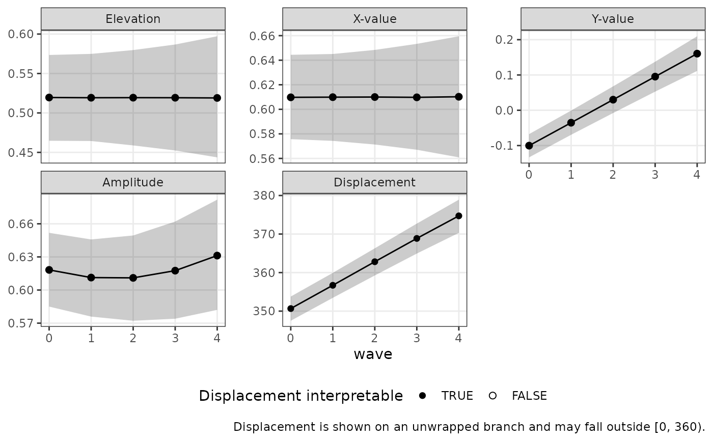

Trajectory of SSM parameters from a fitted growth model
Source:R/ssm_trajectory_helper.R
ssm_trajectory.RdTurn the fixed effects of the joint growth model that
ssm_growth_formula() builds into a table of Structural Summary Method
parameters at each time point, with intervals and the displacement
certification. Two input shapes are accepted. The frequentist shape is
coef and vcov, the fixed effects and their covariance from a glmmTMB
or nlme fit. The function draws n_draws coefficient vectors from the
multivariate normal distribution they define, the same large-sample step
the package's Monte Carlo method takes. The Bayesian shape is draws, a
matrix of posterior coefficient draws such as as.matrix(fit) from brms,
used as given. Under either shape, each draw's e, x and y at time
t are its intercept plus t times its slope, and the draws at each
time go through ssm_draws() with type = "parameters".
Usage
ssm_trajectory(
coef,
vcov,
times,
draws = NULL,
time = "wave",
interval = 0.95,
n_draws = 4000,
contrast = NULL
)
# S3 method for class 'circumplex_ssm_trajectory'
print(x, digits = 2, ...)Arguments
- coef
The fixed effects: a named numeric vector. Required with
vcov, and absent withdraws.- vcov
The covariance matrix of
coef: a symmetric numeric matrix with one row and column per element ofcoef, its dimnames equal tonames(coef)when present. Required withcoef, and absent withdraws.- times
Required. A numeric vector of the time values at which to evaluate the trajectory, one output row each.
- draws
Optional. A numeric matrix of coefficient draws, one row per draw and one named column per coefficient, in place of
coefandvcov. When given,n_drawsis ignored.- time
Optional. The name of the time column in the output, and the suffix of the slope coefficients (default
"wave"), the sametimegiven tossm_growth_data()andssm_growth_formula().- interval
Optional. A single number between 0 and 1 giving the level of the intervals (default = 0.95).
- n_draws
Optional. The number of coefficient vectors to draw from
coefandvcov(default = 4000).- contrast
Optional.
NULL(default) for the default contrast, or a function of one time value returning a 3 bypnumeric matrix whose rows aree,xandyand whose columns follow the order ofcoefor of the columns ofdraws.- x
An object of class
"circumplex_ssm_trajectory".- digits
The number of decimal places to print (default = 2).
- ...
Ignored (S3 consistency).
Value
A data frame of class "circumplex_ssm_trajectory" with
attribute time naming its time column, one row per value of times.
Its columns are <time>; e_est, e_lci, e_uci, and the same three
for x, y, a and d; and certified. The estimates and bounds
are those ssm_draws() reports: medians and equal-tailed interval
bounds for e, x, y and a, and the circular mean with circular
quantile bounds in degrees for d. A d interval that straddles 0/360
degrees has d_lci > d_uci. certified is the displacement
certification at that time, and at an uncertified time the d interval
is not interpretable. Printing shows the table rounded, marks each
uncertified row, and states the small-sample caution.
ssm_plot_trajectory() plots the object with no time argument.
Details
The default contrast reads six coefficient names: dve, dvx, dvy and
dve:<time>, dvx:<time>, dvy:<time>, where <time> is the time
argument. Those are the names the model from ssm_growth_formula() gives
its fixed effects on the long table ssm_growth_data() builds. A b_
prefix on the column names of draws is dropped, and other columns, such
as brms's sd_, cor_ and lp__ columns, are ignored. A missing name
is an error. A contrast function replaces the default for a model with
other terms, such as a quadratic time term; it must return, for one time
value, the 3 by p matrix that maps the p coefficients to e, x and
y at that time, in coefficient order.
The displacement interval at a time point is wrong when x(t) and y(t)
are treated as independent, which is what fitting the coordinates in
separate models does. So the coef and vcov shape refuses a vcov
whose implied covariance between x(t) and y(t) is exactly zero at
every time in times, unless vcov is zero everywhere. The check reads
only the given times, so with a single time it sees only the covariance
terms that time reaches. A draws matrix is not checked for a joint fit. The intervals from a REML fit condition on
its estimated variance components and are too narrow at small samples;
the "Growth Models on SSM Parameters" vignette states the remedies.
See also
Other growth functions:
ssm_growth_data(),
ssm_growth_formula()
Examples
# Fixed effects and covariance in the shape a joint fit returns
coef <- c(
dve = 0.52, dvx = 0.61, dvy = -0.10,
"dve:wave" = 0.00, "dvx:wave" = 0.00, "dvy:wave" = 0.065
)
vcov <- diag(c(7e-4, 3e-4, 3e-4, 5e-5, 2e-5, 2e-5))
vcov[2, 3] <- vcov[3, 2] <- 4e-5
dimnames(vcov) <- list(names(coef), names(coef))
set.seed(1)
trajectory <- ssm_trajectory(coef, vcov, times = 0:4)
trajectory
#>
#> # SSM Trajectory:
#>
#> wave e_est e_lci e_uci x_est x_lci x_uci y_est y_lci y_uci a_est a_lci a_uci
#> 0 0.52 0.46 0.57 0.61 0.58 0.64 -0.10 -0.13 -0.07 0.62 0.58 0.65
#> 1 0.52 0.46 0.57 0.61 0.57 0.65 -0.04 -0.07 0.00 0.61 0.58 0.65
#> 2 0.52 0.46 0.58 0.61 0.57 0.65 0.03 -0.01 0.07 0.61 0.57 0.65
#> 3 0.52 0.45 0.59 0.61 0.57 0.65 0.10 0.05 0.14 0.62 0.57 0.66
#> 4 0.52 0.44 0.60 0.61 0.56 0.66 0.16 0.11 0.21 0.63 0.58 0.68
#> d_est d_lci d_uci
#> 350.66 347.50 353.78
#> 356.70 353.44 359.92
#> 2.81 359.25 6.30
#> 8.86 4.94 12.71
#> 14.72 10.31 18.92
#> Caution: intervals from a fitted model's fixed-effect covariance condition on
#> its estimated variance components, and are too narrow at small samples. See
#> vignette("growth-ssm-analysis"), Section 7.
#>
ssm_plot_trajectory(trajectory)

# The same from a matrix of coefficient draws, here drawn by hand; a brms
# fit gives one as `as.matrix(fit)`
set.seed(1)
draws <- matrix(rnorm(500 * 6), nrow = 500) %*% chol(vcov)
draws <- sweep(draws, 2, coef, "+")
colnames(draws) <- names(coef)
ssm_trajectory(times = 0:4, draws = draws)
#>
#> # SSM Trajectory:
#>
#> wave e_est e_lci e_uci x_est x_lci x_uci y_est y_lci y_uci a_est a_lci a_uci
#> 0 0.52 0.47 0.57 0.61 0.57 0.64 -0.10 -0.13 -0.06 0.62 0.58 0.65
#> 1 0.52 0.47 0.57 0.61 0.57 0.65 -0.04 -0.07 0.00 0.61 0.57 0.65
#> 2 0.52 0.46 0.58 0.61 0.57 0.65 0.03 -0.01 0.07 0.61 0.57 0.65
#> 3 0.52 0.45 0.59 0.61 0.57 0.65 0.09 0.05 0.14 0.62 0.57 0.66
#> 4 0.52 0.44 0.60 0.61 0.56 0.66 0.16 0.11 0.21 0.63 0.58 0.68
#> d_est d_lci d_uci
#> 350.66 347.72 353.89
#> 356.70 353.46 0.11
#> 2.82 359.32 6.68
#> 8.87 4.99 13.00
#> 14.72 10.27 19.40
#> Caution: intervals from a fitted model's fixed-effect covariance condition on
#> its estimated variance components, and are too narrow at small samples. See
#> vignette("growth-ssm-analysis"), Section 7.
#>